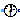
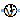
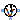
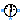
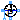
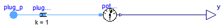
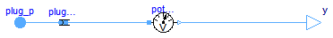
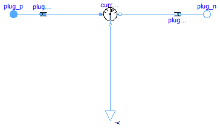
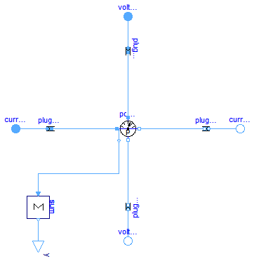

This package hosts sensors for quasi stationary multiphase circuits. Quasi stationary theory can be found in the references.
Extends from Modelica.Icons.SensorsPackage (Icon for packages containing sensors).
| Name | Description |
|---|---|
|  FrequencySensor | Frequency sensor |
|  PotentialSensor | Potential sensor |
|  VoltageSensor | Voltage sensor |
|  CurrentSensor | Current Sensor |
|  PowerSensor | Power sensor |

This sensor can be used to measure the frequency of the reference system, using 1 single phase FrequencySensor.
SinglePhase.FrequencySensor, PotentialSensor
Extends from Interfaces.AbsoluteSensor (Partial potential sensor).
| Type | Name | Default | Description |
|---|---|---|---|
| Integer | m | 3 | number of phases |
| Type | Name | Description |
|---|---|---|
| PositivePlug | plug_p | |
| output RealOutput | y |
model FrequencySensor "Frequency sensor" extends Interfaces.AbsoluteSensor;SinglePhase.Sensors.FrequencySensor potentialSensor; Basic.PlugToPin_p plugToPins_p( final m=m, final k=1); Blocks.Interfaces.RealOutput y; equationconnect(plug_p, plugToPins_p.plug_p); connect(plugToPins_p.pin_p, potentialSensor.pin); connect(potentialSensor.y, y); end FrequencySensor;

This sensor can be used to measure m complex potentials, using m single phase PotentialSensors.
SinglePhase.PotentialSensor, VoltageSensor, CurrentSensor, PowerSensor
Extends from Interfaces.AbsoluteSensor (Partial potential sensor).
| Type | Name | Default | Description |
|---|---|---|---|
| Integer | m | 3 | number of phases |
| Type | Name | Description |
|---|---|---|
| PositivePlug | plug_p | |
| output ComplexOutput | y[m] |
model PotentialSensor "Potential sensor" extends Interfaces.AbsoluteSensor;QuasiStationary.SinglePhase.Sensors.PotentialSensor potentialSensor[ m]; Basic.PlugToPins_p plugToPins_p(final m=m); ComplexBlocks.Interfaces.ComplexOutput y[ m]; equationconnect(potentialSensor.y, y); connect(plug_p, plugToPins_p.plug_p); connect(plugToPins_p.pin_p, potentialSensor.pin); end PotentialSensor;
This sensor can be used to measure m complex voltages, using m single phase VoltageSensors.
SinglePhase.VoltageSensor, PotentialSensor, CurrentSensor, PowerSensor
Extends from Interfaces.RelativeSensor (Partial voltage / current sensor).
| Type | Name | Default | Description |
|---|---|---|---|
| Integer | m | 3 | Number of phases |
| Type | Name | Description |
|---|---|---|
| PositivePlug | plug_p | |
| NegativePlug | plug_n | |
| output ComplexOutput | y[m] |
model VoltageSensor "Voltage sensor" extends Interfaces.RelativeSensor;QuasiStationary.SinglePhase.Sensors.VoltageSensor voltageSensor[ m]; equationconnect(plugToPins_p.pin_p, voltageSensor.pin_p); connect(voltageSensor.pin_n, plugToPins_n.pin_n); connect(voltageSensor.y, y); end VoltageSensor;

This sensor can be used to measure m complex currents, using m single phase CurrentSensors.
SinglePhase.CurrentSensor, PotentialSensor, VoltageSensor, PowerSensor
Extends from Interfaces.RelativeSensor (Partial voltage / current sensor).
| Type | Name | Default | Description |
|---|---|---|---|
| Integer | m | 3 | Number of phases |
| Type | Name | Description |
|---|---|---|
| PositivePlug | plug_p | |
| NegativePlug | plug_n | |
| output ComplexOutput | y[m] |
model CurrentSensor "Current Sensor" extends Interfaces.RelativeSensor;QuasiStationary.SinglePhase.Sensors.CurrentSensor currentSensor[ m]; equationconnect(plugToPins_p.pin_p,currentSensor. pin_p); connect(currentSensor.pin_n, plugToPins_n.pin_n); connect(currentSensor.y, y); end CurrentSensor;

This sensor can be used to measure m complex apparent power values, using m single phase PowerSensors.
SinglePhase.PowerSensor, PotentialSensor, VoltageSensor, CurrentSensor
| Type | Name | Default | Description |
|---|---|---|---|
| Integer | m | 3 | number of phases |
| Type | Name | Description |
|---|---|---|
| PositivePlug | currentP | |
| NegativePlug | currentN | |
| PositivePlug | voltageP | |
| NegativePlug | voltageN | |
| output ComplexOutput | y |
model PowerSensor "Power sensor" parameter Integer m(min=1) = 3 "number of phases"; Modelica.SIunits.AngularVelocity omega = der(currentP.reference.gamma);Interfaces.PositivePlug currentP; Interfaces.NegativePlug currentN; Interfaces.PositivePlug voltageP; Interfaces.NegativePlug voltageN; Modelica.ComplexBlocks.Interfaces.ComplexOutput y; Basic.PlugToPins_p plugToPinsCurrentP(final m=m); Basic.PlugToPins_p plugToPinsVoltageP(final m=m); Basic.PlugToPins_n plugToPinsCurrentN(final m=m); Basic.PlugToPins_n plugToPinsVoltageN(final m=m); QuasiStationary.SinglePhase.Sensors.PowerSensor powerSensor[ m]; Modelica.ComplexBlocks.ComplexMath.Sum sum(final nin=m); equationconnect(plugToPinsCurrentP.plug_p, currentP); connect(currentN, plugToPinsCurrentN.plug_n); connect(voltageP, plugToPinsVoltageP.plug_p); connect(plugToPinsVoltageN.plug_n, voltageN); connect(plugToPinsCurrentP.pin_p, powerSensor.currentP); connect(powerSensor.currentN, plugToPinsCurrentN.pin_n); connect(powerSensor.voltageP, plugToPinsVoltageP.pin_p); connect(powerSensor.voltageN, plugToPinsVoltageN.pin_n); connect(powerSensor.y, sum.u); connect(sum.y, y); connect(currentP, currentP); end PowerSensor;